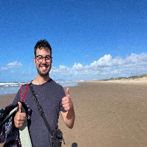
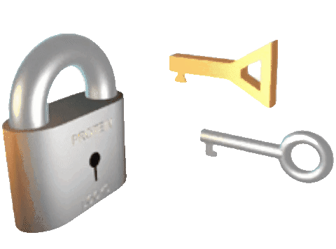

My name is João Diogo Duarte, and I am a PhD student in Cryptography at the University of Porto and INESC-TEC, under the supervision of Professor Manuel Barbosa. I am also a member of the Formosa Crypto group, primarily working in EasyCrypt proofs and Jasmin implementations.
My research focuses on formally proving the correctness and security of cryptographic schemes, and on post-quantum migration of systems. This involves analysing and expanding upon the design, security proofs, and validation of high-assurance implementations and specifications of post-quantum cryptography (PQC) and hybrid protocols.
For more information about my research, publications and code, please refer to the following links:
Contact: joao [AT] diogoduarte [DOT] pt